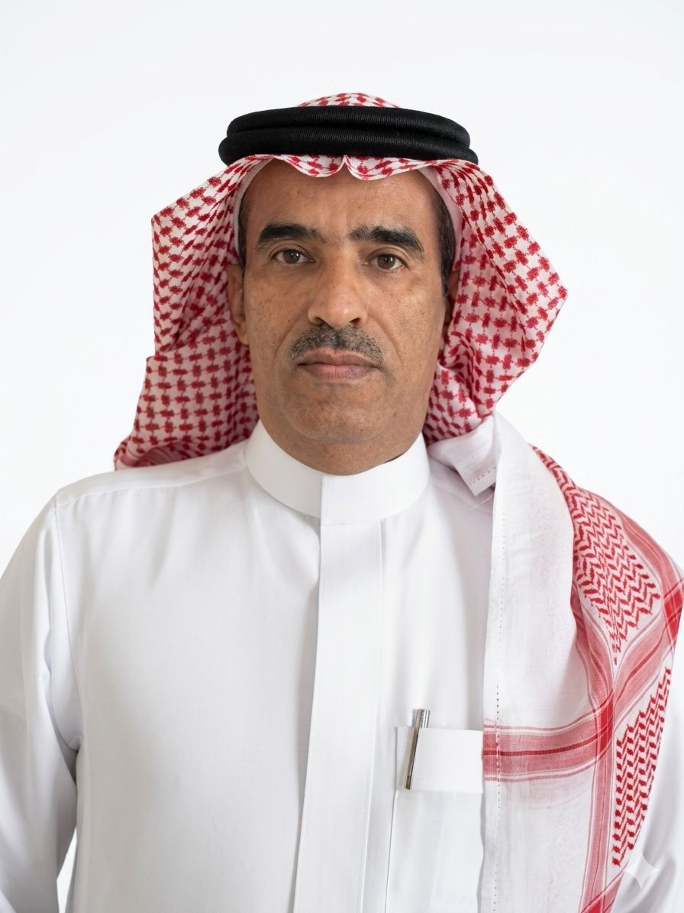

التقرير النهائي لموسم الحج 1447هـ
يسلط هذا التقرير الضوء على جهود مكتب أعمال الوزارة بمطار الملك عبدالعزيز الدولي بجدة في خدمة الحجاج والمعتمرين، من خلال توزيع المطبوعات التوعوية وهدية خادم الحرمين الشريفين، والإجابة على الاستفسارات الشرعية حضوريًا وعن بُعد عبر الدعاة المشاركين، إضافةً إلى إنشاء منصة رقمية متخصصة – لأول مرة – لإدارة الجرد الميداني وإصدار التقارير والإحصائيات بشكل آلي، بما يسهم في رفع الكفاءة الإدارية وتحسين جودة الخدمات المقدمة لضيوف الرحمن، بما يواكب توجهات الوزارة نحو تطوير الخدمات الدعوية والتوعوية.
فيديو توضيحي
جهود إعداد واستقبال ضيوف الرحمن | قسم الإعلام والإتصال المؤسسي
قيادة حكيمة تُمكّن مسيرة الإنجاز
بمتابعة حثيثة وتوجيهات متواصلة لتقديم أرقى الخدمات والوفادة لضيوف الرحمن

معالي وزير الشؤون الإسلامية
الدعوة والإرشاد
تسخير كافة الإمكانيات والطاقات، وتقديم أرقى مستويات الدعم والمساندة؛ للارتقاء بخدمة ضيوف الرحمن وفق أعلى معايير الجودة والتميز.

مدير إدارة المساجد والدعوة
محافظة جدة
المتابعة المباشرة لخطط التوزيع ومراقبة التزام اللجان العاملة في كافة صالات المنافذ البرية والبحرية والجوية.

المشرف العام على المكتب
مطار الملك عبدالعزيز الدولي
إدارة العمليات اليومية بالميدان، وتنسيق الجهود اللوجستية وتوزيع الكوادر لضمان انسيابية العمل وسرعة الإنجاز.
رحلة الحاج: بين الاستقبال والتوديع… قصة عطاءٍ.
نهج تكاملي يبدأ قبل وصول الحاج ويرافقه خطوة بخطوة بالدعوة والإرشاد والتوجيه، وحتى مغادرته سالماً غانماً إلى بلاده حاملاً كتاب الله تعالى.
التجهيز والعمليات الخلفية
قبلَ وصولِ طلائعِ الحجاج، تتكاتفُ الجهودُ وتتكاملُ الاستعداداتُ في مشهدٍ يعكسُ عِظَمَ الرسالةِ وشرفَ الخدمة، حيثُ تُعَدُّ وتُصنَّفُ مئاتُ الآلافِ من المطبوعاتِ والكتيباتِ الدعوية، وتُجهَّزُ بعنايةٍ بلغاتِ العالمِ المختلفة داخلَ مستودعاتِ المطارِ والميناءِ، لتصلَ إلى ضيوفِ الرحمنِ رسالةُ هدايةٍ وتوعيةٍ منذُ اللحظاتِ الأولى لقدومهم.
الاستقبال والاحتفاء
منذُ اللحظةِ الأولى لوصولِهم إلى أرضِ المملكة العربية السعودية، تتلقّاهم القلوبُ قبلَ الأبواب، وتُزفُّ إليهم كلماتُ «حيّاكم الله» بصدقِ المحبةِ ودفءِ الترحيب، في مشهدٍ تمتزجُ فيه أصالةُ الأخلاقِ السعوديةِ بعظيمِ شرفِ خدمةِ ضيوفِ الرحمن، لتكونَ بدايتُهم مطمئنّة، وذكراهم عامرةً بالمودّةِ وحسنِ الوفادة.
مقرات الافتاء ولحظات التوزيع الميداني

يتواجدُ دعاةُ الوزارةِ الأجلّاءُ في المراكزِ المخصّصةِ على مدارِ الساعة، للإجابةِ عن التساؤلاتِ الشرعيةِ وتوجيهِ الحجيجِ بلغاتهم المختلفة، بالتزامنِ مع تسليمِ الحقائبِ والكتيباتِ الإرشادية، بمشاركةِ كوادرِنا الميدانيةِ المتميّزة، في صورةٍ مشرقةٍ من العطاءِ والتنظيمِ وخدمةِ ضيوفِ الرحمن.
توزيع هدية خادم الحرمين الشريفين والوداع
اللحظةُ الأشدُّ تأثيرًا وعمقًا في المشاعر؛ لحظةُ تسليمِ نسخةٍ من كتابِ اللهِ الكريمِ لكلِّ مغادرٍ بعد إتمامِه مناسكَ الحج، في أجواءٍ تفيضُ بالروحانيةِ والسكينة، تختلطُ فيها الدموعُ بالدعوات، وتعلو فيها كلماتُ الشكرِ والامتنانِ لـالمملكة العربية السعودية على ما تقدّمه من عنايةٍ ورعايةٍ لضيوفِ الرحمن.
الأداء الميداني في لغة الأرقام والمؤشرات
نستعرض هنا الإحصاءات الرسمية الحية المدخلة والموثقة عبر المنصة الرقمية لتوضيح حجم الإنتاجية وعطاء الكوادر في المنافذ.
إجمالي المطبوعات الموزعة
0
الإجمالي الكلي للمطبوعات والمواد الموزعة حسب التقرير
عدد اللغات المتاحة
0
عدد اللغات التي تم توزيع المواد بها
عدد المستفيدين من المناشط الدعوية
0
عدد المستفيدين من الدروس والمحاضرات
إجمالي صالات التوزيع
0
عدد الأماكن المغطاة داخل المطار والميناء
عدد الساعات التطوعية
0
إجمالي ساعات العمل التطوعي الميداني بالمطار
إجمالي الكتب
0
المواد المصنفة ككتب ضمن التقرير
إجمالي المطويات
0
المواد المصنفة كمطويات توعوية وإرشادية
إجمالي الكروت الرقمية
0
عدد الكروت الرقمية الموزعة في التقرير
إجمالي القرآن الكريم
0
عدد المصاحف الموزعة ضمن البيانات الميدانية
تنوع وتصنيف المواد الموزعة
تقسيم المطبوعات حسب فئاتها لضمان التوعية الشاملة
قائمة الكتب الموزعة
عرض كامل لأسماء الكتب الموزعة وعدد النسخ لكل كتاب
اللغات الأعلى توزيعاً وطلباً
مؤشر ذكي يحدد الفئات اللغوية الأكثر احتياجاً
حجم ونسبة المصاحف
نسبة المصاحف مقارنة ببقية المواد الموزعة
0
عدد المصاحف الموزعة من إجمالي المواد الميدانية
التحول الرقمي والتميز الميداني
بروح العصر وبأدوات حوكمة حديثة، نسخر التقنية ومراقبة العمليات الرقمية لحظة بلحظة للرقي بتجربة خدمة حجاج بيت الله الحرام.
مراقبة لحظية
وجودة مستدامة
تعمل اللوحات التفاعلية للمنصة الرقمية على مراقبة حركة توزيع الكتب والمطبوعات، ومستوى الاحتياج في الميدان بما يدعم استمرارية التوزيع، كما توفّر مؤشرات أداء لحظية وتقارير متقدمة عبر واجهة حديثة.
نثمن ونشيد بالجهود الرقمية الاستثنائية التي قدمها الزميل عاصم المالكي في هندسة البيانات وبناء هذه اللوحات القياسية الميدانية المتقدمة.

الزميل: عاصم المالكي
تحية شكر وتقدير
إلى كافة الزملاء والمشاركين في موسم الحج، أبعث إليكم بخالص الشكر على جهودكم الاستثنائية. كان لتعاونكم الأثر الأكبر في نجاح المنصة الرقمية، والتي عكست حجم أعمالكم في الميدان بكل تميز واقتدار. جزاكم الله خير الجزاء.
المنصة الرقمية
نستعرض معكم الواجهة الحية والمباشرة للمنصة الرقمية الذكية المصممة لمتابعة وإدارة أعمال الحج بجودة وكفاءة عالية.
مراقبة لحظية
متابعة عمليات التوزيع والمتابعة الميدانية في الوقت الفعلي عبر المنصة الرقمية المتكاملة.
تحليل البيانات
تحليل إحصائي شامل لأعداد المطبوعات واللغات والصالات لتقييم الأداء وتحسين التوزيع.
اتخاذ القرار
دعم صناع القرار بتقارير فورية ومؤشرات أداء دقيقة لضمان جودة الخدمة المقدمة لضيوف الرحمن.